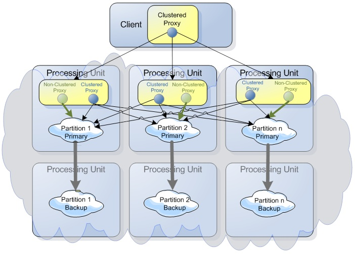

When deploying a Processing Unit(PU) configured with an embedded Space with a clustered SLA or when running a remote clustered space, a clustered GigaSpace proxy is created.
A clustered proxy is a smart proxy that performs operations against the entire cluster when needed.
write operation will be routed based on the routing field value to the relevant partition (using the routing field hashcode to calculate the the target partition).read operation will do the same by routing the operation to the relevant partition.writeMultiple will generate an entries bucket per partition for all entries that should be placed within the same partition and perform a parallel write to all relevant partitions.readMultiple and clear operations will access all cluster partitions in a map-reduce fashion if the query/template routing value is not specified.execute operation will route the Task to the relevant partition based on the routing value.execute operation will route the DistributedTask to all partitions if no routing value been specified or to a specific partitions if a routing value been specified.Many times, especially when working with a Processing Unit that starts an embedded Space, operations against the Space should be performed directly on the cluster member without interacting with the other Space cluster members (partitions). This is a core concept of the SBA and Processing Unit, where most if not all the operations should be performed in-memory without leaving the Processing Unit boundaries, when a Processing Unit starts an embedded Space.

The decision of working directly with a cluster member or against the whole cluster is done at the GigaSpace level. The GigaSpacesFactoryBean provides a clustered flag with the following logic as the default value: If the Space is started in embedded mode (for example, /./space), the clustered flag is set to false. When the Space is looked up in a remote protocol (i.e. jini://*/*/space, the clustered flag is set to true.
You can use the clustered property to control this behavior or use the API to use a non-clustered embedded proxy to create a clustered proxy. This allows the co-located business logic to access the entire cluster to perform cluster wide operations. Clustered and non-clustered proxies may be used with a Task, Service, Notify Container , Polling Container and any other co-located business logic.
You may use a Spring- based configuration or API to create a clustered proxy.
When using a Spring-based pu.xml to construct the GigaSpace bean to be injected into the other relevant beans, the following should be used to create a clustered and a non-clustered GigaSpace bean:
<os-core:embedded-space id="space" space-name="mySpace"/>
<os-core:giga-space id="nonClusteredGigaSpace" space="space"/>
<os-core:giga-space id="clusteredGigaSpace" space="space" clustered="true"/>
The GigaSpace.getClustered() method allows you to get a cluster-wide proxy from a non-clustered proxy. In this case, the @GigaSpaceContext should be used to inject the non-clustered GigaSpace bean or the @TaskGigaSpace when executing a Task that is invoked on the Space side.
Another option is to use the GigaSpaceConfigurer:
GigaSpace gigaSpace = new GigaSpaceConfigurer(new SpaceProxyConfigurer("space")).clustered(true).gigaSpace();
An example of a Remoting Service with a clustered and non-clustered proxy:
@RemotingService
public class MyService implements ClusterInfoAware, IMyService{
@GigaSpaceContext(name="gigaSpaceEmbedNonClustered")
GigaSpace gigaSpaceEmbedNonClustered;
GigaSpace gigaSpaceClustered;
...
}
Here is how the clustered proxy is constructed:
@SpaceStatusChanged
public void onSpaceStatusChange(SpaceStatusChangedEvent event) {
if (event.getSpaceMode() == SpaceMode.PRIMARY && event.getSuspendType() == SuspendType.NONE) {
gigaSpaceClustered=gigaSpaceEmbedNonClustered.getClustered();
...
}
}
An example of a DistributedTask implementation with a clustered and non-clustered proxy:
public class MyTask implements ClusterInfoAware , DistributedTask<Integer, Integer>{
@TaskGigaSpace
transient GigaSpace gigaSpaceEmbedNonClustered;
transient GigaSpace gigaSpaceClustered;
...
}
Here is how the clustered proxy is constructed:
public Integer execute() throws Exception {
gigaSpaceClustered=gigaSpaceEmbedNonClustered.getClustered();
...
}
A clustered proxy provides access to the entire cluster rather than a specific partition. If you need to read/write/take/clear/execute against the entire cluster, you must use a clustered proxy.
With a remote client, serialization and network activity will impact performance when writing/reading data. With a co-located non-clustered proxy, serialization and network activity will not happen when the client code interacts with the embedded Space so these should not be considered, but they should be considered when the embedded Space has a backup pair. Here the replication activity will be impacted by the serialization and network activity. Still, this would be a single network hop rather than two when having a remote client.
To protect a user using a non-clustered proxy from writing or updating objects using a wrong routing field value, GigaSpaces runs by default in Protective Mode. This will throw the ProtectiveModeException and block users from getting into such scenarios. You can turn off this behavior by using the following: com.gs.protectiveMode.wrongEntryRoutingUsage=false.
The com.gigaspaces.client.protective.ProtectiveModeException is thrown when:
The error message looks like this:
The ProtectiveModeException Exception
Exception in thread "main" com.gigaspaces.client.protective.ProtectiveModeException: Operation is rejected - the routing value in the written entry of type com.test.Data does not match this Space partition ID. The value within the entry's routing property named id is 1, which matches partition ID 2 while the current partition ID is 1. Having a mismatching routing value would result in a remote client not being able to locate this entry, as the routing value will not match the partition where the entry is located. (You can disable this protection, though it is not recommended, by setting the following system property: com.gs.protectiveMode.wrongEntryRoutingUsage=false.)
There are scenarios where a co-located component (Remote Service, Task, Event Container) will have both a clustered proxy and a non-clustered embedded proxy. The clustered proxy will be used to interact with the entire cluster, and the non-clustered embedded proxy will be used to bootstrap the Space and interact only with the local partition.
With our examples below we will use this simple Space Class:
import com.gigaspaces.annotation.pojo.SpaceId;
public class Data {
public Data(){}
Integer id;
@SpaceId(autoGenerate=false)
public Integer getId() {
return id;
}
public void setId(Integer id) {
this.id = id;
}
}
When there is no explicit @SpaceRouting declared, the method annotated as the @SpaceId is used as the @SpaceRouting method.
With this example the pu.xml includes the following:
<os-core:embedded-space id="spaceEmbed" space-name="mySpace" />
<os-core:giga-space id="gigaSpaceEmbedNonClustered" space="spaceEmbed" />
<os-core:annotation-support />
<os-core:giga-space-context/>
<context:component-scan base-package="com.test"/>
<os-remoting:annotation-support />
<os-remoting:service-exporter id="serviceExporter" />
Our Service uses @SpaceStatusChanged to decorate the method that constructs the clustered proxy from the non-clustered proxy, and also @ClusterInfoContext that provides information about the cluster topology and the local partition ID.
Here is how the service interface looks like:
public interface IMyService {
public String myMethod(@Routing Integer routing);
}
The @Routing annotation is used to decorate the method specified as the routing field.
Here is how the service implementation looks:
package com.test;
import org.openspaces.core.GigaSpace;
import org.openspaces.core.cluster.ClusterInfo;
import org.openspaces.core.cluster.ClusterInfoContext;
import org.openspaces.core.context.GigaSpaceContext;
@RemotingService
public class MyService implements IMyService{
@GigaSpaceContext(name="gigaSpaceEmbedNonClustered")
GigaSpace gigaSpaceEmbedNonClustered;
GigaSpace gigaSpaceClustered;
@ClusterInfoContext
ClusterInfo clusterInfo;
@SpaceStatusChanged
public void onSpaceStatusChange(SpaceStatusChangedEvent event) {
String preMes = "From Service - partition " + clusterInfo.getInstanceId();
System.out.println(preMes+ " - Cluster info " + clusterInfo);
if (event.getSpaceMode() == SpaceMode.PRIMARY && event.getSuspendType() == SuspendType.NONE) {
System.out.println(preMes + " writing object using embedded Non-Clustered proxy");
Data d = new Data();
// We write a single dummy object to the local partition. Since the ID is also the routing field we are OK.
d.setId(clusterInfo.getInstanceId()-1); // Partition id = InstanceId - 1
gigaSpaceEmbedNonClustered.write(d);
System.out.println(preMes+ " Getting Remote Clustered proxy from the embedded Non-Clustered");
gigaSpaceClustered=gigaSpaceEmbedNonClustered.getClustered();
System.out.println(preMes+ " - gigaSpaceEmbed - total visible objects:" + gigaSpaceEmbedNonClustered.count(null));
}
}
public String myMethod(Integer routing)
{
int countEmbed = gigaSpaceClustered.count(null);
int countRemote = gigaSpaceEmbedNonClustered.count(null);
String mes = "Service call - routing " + routing + " partition " +
clusterInfo.getInstanceId() + " gigaSpaceRemote - total visible objects:" + countEmbed;
mes = mes + "\nService call - routing " + routing + " partition " +
clusterInfo.getInstanceId() + " gigaSpaceEmbed - total visible objects:" + countRemote;
return mes;
}
}
The service is called using the following:
GigaSpace space = new GigaSpaceConfigurer(new SpaceProxyConfigurer("space")).gigaSpace();
IMyService service = new ExecutorRemotingProxyConfigurer<IMyService>(space , IMyService.class).proxy();
String mes1 = service.myMethod(0);
String mes2 = service.myMethod(1);
System.out.println(mes1);
System.out.println(mes2);
The service output:
...
From Service - partition 1 - Cluster info name[null] schema[partitioned] numberOfInstances[2] numberOfBackups[null] instanceId[1] backupId[null]
From Service - partition 1 writing object using embedded Non-Clustered proxy
From Service - partition 1 Getting Remote Clustered proxy from the embedded Non-Clustered
From Service - partition 1 - gigaSpaceEmbed - total visible objects:1
Got event! Data [id=0]
....
From Service - partition 2 - Cluster info name[null] schema[partitioned] numberOfInstances[2] numberOfBackups[null] instanceId[2] backupId[null]
From Service - partition 2 writing object using embedded Non-Clustered proxy
From Service - partition 2 Getting Remote Clustered proxy from the embedded Non-Clustered
Got event! Data [id=1]
From Service - partition 2 - gigaSpaceEmbed - total visible objects:1
...
partition 1 gigaSpaceRemote - total visible objects:2
partition 2 gigaSpaceRemote - total visible objects:2
The client output:
Service call - routing 0 partition 1 gigaSpaceRemote - total visible objects:2
Service call - routing 0 partition 1 gigaSpaceEmbed - total visible objects:1
Service call - routing 1 partition 2 gigaSpaceRemote - total visible objects:2
Service call - routing 1 partition 2 gigaSpaceEmbed - total visible objects:1
Our DistributedTask implements ClusterInfoAware. This allows it to be injected with the ClusterInfo that provides information about the cluster topology and the local partition ID. Here is how the DistributedTask looks.
The pu.xml includes the following:
<os-core:embedded-space id="spaceEmbed" space-name="mySpace" />
<os-core:giga-space id="gigaSpaceEmbedNonClustered" space="spaceEmbed" />
The DistributedTask looks like this:
package com.test;
import java.util.List;
import org.openspaces.core.GigaSpace;
import org.openspaces.core.cluster.ClusterInfo;
import org.openspaces.core.cluster.ClusterInfoAware;
import org.openspaces.core.executor.DistributedTask;
import org.openspaces.core.executor.TaskGigaSpace;
import com.gigaspaces.annotation.pojo.SpaceRouting;
import com.gigaspaces.async.AsyncResult;
public class MyTask implements ClusterInfoAware , DistributedTask<Integer, Integer>{
@TaskGigaSpace
transient GigaSpace gigaSpaceEmbedNonClustered;
transient GigaSpace gigaSpaceClustered;
transient ClusterInfo clusterInfo;
int routing;
public void setClusterInfo(ClusterInfo clusterInfo ) {
this.clusterInfo = clusterInfo;
}
public Integer execute() throws Exception {
String preMes = "From Task Execute - partition " + clusterInfo.getInstanceId() ;
System.out.println(preMes+ " - Cluster info " + clusterInfo);
System.out.println(preMes + " writing object using embedded Non-Clustered proxy" );
Data d = new Data();
// We write a single dummy object to the local partition. Since the ID is also the routing field we are OK.
d.setId(clusterInfo.getInstanceId()-1); // Partition id = InstanceId - 1
gigaSpaceEmbedNonClustered.write(d);
System.out.println(preMes+ " Getting Remote Clustered proxy from the embedded Non-Clustered");
gigaSpaceClustered= gigaSpaceEmbedNonClustered.getClustered();
System.out.println(preMes+ " - gigaSpaceEmbed - total visible objects:" +
gigaSpaceEmbedNonClustered.count(null));
System.out.println(preMes + " gigaSpaceRemote - total visible objects:" +
gigaSpaceClustered.count(null));
return null;
}
public Integer reduce(List<AsyncResult<Integer>> arg0) throws Exception {
return null;
}
@SpaceRouting
public int getRouting() {
return routing;
}
public void setRouting(int routing) {
this.routing = routing;
}
}
GigaSpace space = new GigaSpaceConfigurer(new SpaceProxyConfigurer("space")).gigaSpace();
space.execute(new MyTask());
The DistributedTask execute output:
From Task Execute - partition 1 - Cluster info name[null] schema[partitioned] numberOfInstances[2] numberOfBackups[null] instanceId[1] backupId[null]
From Task Execute - partition 2 - Cluster info name[null] schema[partitioned] numberOfInstances[2] numberOfBackups[null] instanceId[2] backupId[null]
From Task Execute - partition 1 writing object using embedded Non-Clustered proxy
From Task Execute - partition 2 writing object using embedded Non-Clustered proxy
From Task Execute - partition 1 Getting Remote Clustered proxy from the embedded Non-Clustered
From Task Execute - partition 2 Getting Remote Clustered proxy from the embedded Non-Clustered
From Task Execute - partition 2 - gigaSpaceEmbed - total visible objects:1
From Task Execute - partition 1 - gigaSpaceEmbed - total visible objects:1
From Task Execute - partition 1 gigaSpaceRemote - total visible objects:2
From Task Execute - partition 2 gigaSpaceRemote - total visible objects:2
With this example the pu.xml includes the following:
<os-core:embedded-space id="spaceEmbed" space-name="mySpace" />
<os-core:giga-space id="gigaSpaceEmbedNonClustered" space="spaceEmbed" />
<os-events:annotation-support />
<os-core:annotation-support />
<os-core:giga-space-context/>
<context:component-scan base-package="com.test"/>
Our event container (notify container) uses @SpaceStatusChanged to decorate the method that constructs the clustered proxy from the non-clustered proxy, and also @ClusterInfoContext that provides information about the cluster topology and the local partition ID.
Here is how the event container looks:
package com.test;
import org.openspaces.core.GigaSpace;
import org.openspaces.core.cluster.ClusterInfo;
import org.openspaces.core.cluster.ClusterInfoAware;
import org.openspaces.core.cluster.ClusterInfoContext;
import org.openspaces.core.context.GigaSpaceContext;
import org.openspaces.events.EventDriven;
import org.openspaces.events.EventTemplate;
import org.openspaces.events.adapter.SpaceDataEvent;
import org.openspaces.events.notify.Notify;
@EventDriven @Notify()
public class MyNotifyContainer {
@GigaSpaceContext(name="gigaSpaceEmbedNonClustered")
GigaSpace gigaSpaceEmbedNonClustered;
GigaSpace gigaSpaceClustered;
@ClusterInfoContext
ClusterInfo clusterInfo;
@EventTemplate
Data unprocessedData() {
Data template = new Data();
return template;
}
@SpaceDataEvent
public void eventListener(Data event) {
//process Data here
String preMes = "From Notify Container - partition " + clusterInfo.getInstanceId() ;
System.out.println("Got event! " + event);
System.out.println(preMes + " Counting total space objects using a Clustered proxy" );
gigaSpaceEmbedNonClustered.count(null);
}
@SpaceStatusChanged
public void onSpaceStatusChange(SpaceStatusChangedEvent event) {
String preMes = "From Notify Container - partition " + clusterInfo.getInstanceId() ;
System.out.println(preMes+ " - Cluster info " + clusterInfo);
if (event.getSpaceMode() == SpaceMode.PRIMARY && event.getSuspendType() == SuspendType.NONE) {
System.out.println(preMes+ " Getting Remote Clustered proxy from the embedded Non-Clustered");
gigaSpaceClustered= gigaSpaceEmbedNonClustered.getClustered();
}
}
GigaSpace space = new GigaSpaceConfigurer(new SpaceProxyConfigurer("space")).gigaSpace();
Data d = new Data();
d.setId(0);
space.write(d);
d.setId(1);
space.write(d);
Event container output:
...
From Notify Container - partition 1 - Cluster info name[null] schema[partitioned] numberOfInstances[2] numberOfBackups[null] instanceId[1] backupId[null]
From Notify Container - partition 1 Getting Remote Clustered proxy from the embedded Non-Clustered
...
From Notify Container - partition 2 - Cluster info name[null] schema[partitioned] numberOfInstances[2] numberOfBackups[null] instanceId[2] backupId[null]
From Notify Container - partition 2 Getting Remote Clustered proxy from the embedded Non-Clustered
....
Got event! Data [id=0]
From Notify Container - partition 1 Counting total space objects using a Clustered proxy :1
Got event! Data [id=1]
From Notify Container - partition 2 Counting total space objects using a Clustered proxy :1
When writing new objects from co-located business logic with a partitioned Space, the routing field must "match" the co-located Space instance. See the below example of loading data to the Space using a DistributedTask injected with a co-located proxy.
With this example, the routing field is a String data type. An Integer as a routing field data type is always preferred. Using this approach will ensure that you don't get an error because GigaSpaces will block writing objects with the wrong routing field value to the Space when a co-located proxy is used.
With this approach, you can load large number of objects into the Space very quickly because it runs in parallel across all the partitions. Using writeMultiple will make this even faster.
public class LoadTask implements DistributedTask<Integer, Integer> ,ClusterInfoAware{
int safeABS( int value)
{
return value == Integer.MIN_VALUE ? Integer.MAX_VALUE : Math.abs(value);
}
public LoadTask(int maxObjects)
{
this.maxObjects = maxObjects;
}
int maxObjects;
int routing;
@TaskGigaSpace
transient GigaSpace space;
transient ClusterInfo clusterInfo;
@Override
public Integer execute() throws Exception {
int partitions = clusterInfo.getNumberOfInstances();
int partitionId = clusterInfo.getInstanceId();
int count = 0;
for(int i=0;i<maxObjects;i++)
{
String id = "12345678901234567890123456789"+i;
int targetPartition = safeABS(id.hashCode()) % (partitions);
if (targetPartition == (partitionId -1))
{
count ++;
MySpaceObject myobj=...
myobj.setRouting(targetPartition);
space.write(myobj);
}
}
return null;
}
public Integer reduce(List<AsyncResult<Integer>> arg0) throws Exception {
return null;
}
@Override
public void setClusterInfo(ClusterInfo clusterInfo) {
this.clusterInfo = clusterInfo;
}
public int getMax() {
return maxObjects;
}
public void setMax(int maxObjects) {
this.maxObjects = maxObjects;
}
@SpaceRouting
public int getRouting() {
return routing;
}
public void setRouting(int routing) {
this.routing = routing;
}
}